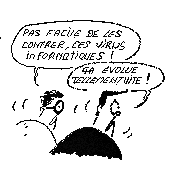

Bien que ne représentant qu'une des menaces parmi celles qui pèsent
sur les systèmes d'information, les virus semblent avoir acquis une
certaine célébrité, sans doute parce que leur connotation
pathologique, au demeurant justifiée, a su frapper l'imaginaire.
Au-delà des fantasmes que le terme déclenche, les virus, sous
les formes variées qu'ils peuvent prendre, constituent effectivement
un vecteur de choix pour conduire ou faciliter les attaques contre les systèmes
faisant appel à l'informatique, qu'il s'agisse de simples micro-ordinateurs
personnels, de commutateurs téléphoniques comportant plusieurs
millions d'instructions, de vastes systèmes répartis ou de
calculateurs pilotant des installations d'intérêt stratégique
tels qu'une centrale nucléaire, sans parler des systèmes de
la Défense.
Si cette forme d'agression revêt souvent un aspect ludique et se
trouve complaisamment assimilée à une compétition,
voire à une saine émulation entre des responsables de systèmes
et des attaquants parfois abusivement qualifiés de géniaux,
il n'en demeure pas moins qu'il s'agit d'actions délibérées
destinées à nuire, en un mot, de sabotages parfaitement répréhensibles
et d'ailleurs passibles de poursuites pénales, contre lesquels il
convient de se prémunir et de lutter.
Les parades miracles efficaces à 100% n'existent pas. A peine
un remède est-il diffusé qu'il est déjà contourné.
L'extrême degré de sophistication de certains virus, les techniques
utilisées, au nombre desquelles on peut citer les codes furtifs et
le polymorphisme, témoignent de la surenchère. Seul un ensemble
de mesures organisationnelles et techniques, incluant l'utilisation de logiciels
anti-virus évolués, peut éloigner le risque d'une contamination
ou en diminuer les effets. Par la crainte, parfois même la panique,
qu'ils suscitent, les virus ont au moins le mérite de réveiller
les consciences et de faire adopter des mesures de défense souvent
négligées et dont certaines sont efficaces contre les autres
formes d'agression.
Colonel Jean-Louis Desvignes
Chef du Service Central de la Sécurité
des Systèmes d'Information

Chronique d'un virus annoncé : Michelangelo
Le 6 mars 1992, un grand nombre d'installations informatiques étaient
dévastées par un nouveau virus (c'était la première
fois qu'il frappait) portant le nom aimable de Michelangelo, en raison de
la date anniversaire de la naissance du peintre. 1993 : rien ne se passa.
1994 : tout fut calme. La raison en était simple : en 1992, le 6
mars tombait un vendredi alors que, les deux années suivantes, cette
date se situait pendant le week-end, période au cours de laquelle
les activités bureautiques professionnelles sont des plus réduites.
Mais, cette année, le 6 mars tombait un lundi.
Prévenus, comme beaucoup d'autres, par un message diffusé
sur une liste Internet spécialisée dans les virus, nous avions,
à notre tour, rediffusé l'information par e-mail et par fax
à nos correspondants régionaux. Un malencontreux hasard voulut
que, dans une délégation régionale, le correspondant
ayant changé sans que nous en fussions prévenus, le message
ne parvint pas à (bonne) destination. Et ce qui devait arriver arriva.
Les machines d'un laboratoire subirent les dommages prévus (perte
du contenu du disque dur).
Bel exemple de virus "taupe" pouvant rester blotti, tranquille,
dans son coin de disque dur, pour ne se réveiller qu'à date
fixe. Il en existe dont les conditions de mise en activité peuvent
être plus complexes et nécessiter la rencontre simultanée
de plusieurs conditions. Ce sont sans doute les plus dangereux car, en temps
normal, on n'a aucune raison de soupçonner leur présence,
et quand on la découvre, il est trop tard. Il y a un remède
: au moins une fois tous les mois, lancer un logiciel de détection
de virus. Généralement, le résultat sera négatif.
Mais on vivra plus tranquille...
Quelles sont les machines concernées
?
Nous ne retiendrons que les ordinateurs personnels et les stations de
travail, qui sont les matériels les plus répandus dans notre
milieu. On peut distinguer trois groupes de systèmes, d'après
le nombre des machines en service et non selon leurs qualités intrinsèques
:
- Les ordinateurs dits compatibles IBM. On y dénombre
(selon la typologie adoptée) de 3 000 à 6 000 virus différents.
Ce nombre considérable est dû à deux causes. D'abord,
au système d'exploitation rudimentaire, pratiquement dépourvu
de protection et bien documenté. Ensuite, à la popularité
de ce matériel, bon marché, tant sur le secteur du neuf que
sur celui de l'occasion.
- Les Macintosh. Les recoupements que nous avons effectués
situent aux alentours de la douzaine le nombre de virus recensés.
S'agissant d'un système fermé, qui plus est relativement
onéreux, on comprend qu'il y ait peu de tentations de porter le
ver dans ce fruit.
- Les stations de travail. La frontière entre
station de travail et PC est de plus en plus floue en ce qui concerne la
puissance de traitement. Nous établirons donc notre distinguo sur
le système d'exploitation traditionnellement utilisé sur
ce type de matériel : UNIX. Son architecture se prête mal
à l'introduction de virus et nous pourrons donc ignorer ce groupe.
Qu'est-ce qu'un virus ?
Définitions
"Un virus est un virus" (André Lwoff, prix Nobel de
Médecine - 1965). En informatique, on appelle virus "tout programme
d'ordinateur capable d'infecter un autre programme d'ordinateur en le modifiant
d'une façon qu'il puisse, à son tour, se reproduire"
(Fred Cohen). On notera l'absence de toute référence à
la notion de dommage direct ou indirect. Il existe aussi le cheval de Troie,
qui est un programme capable d'effectuer une action non documentée
que líutilisateur n'approuverait pas nécessairement s'il en
était informé.
Toutefois, dans le langage courant (celui de l'utilisateur), une telle
distinction n'est pas de mise et on appelle tout simplement virus tout programme
qui, à l'insu de líutilisateur; exerce une action nuisible
à son environnement : modification ou destruction de fichiers, effacement
du disque dur, allongement des temps de traitement, manifestations visuelles
ou sonores plus ou moins inquiétantes, etc. Cette action peut être
continue, sporadique, périodique ou n'avoir lieu qu'à une
date précise ou selon la conjonction d'événements extérieurs
fortuits. Le virus Michelangelo, par exemple, ne se déclenche que
le 6 mars.
Essai de classification
On admet, généralement, qu'il existe deux classes principales
de virus : les infecteurs de fichiers qui s'attachent, tels des sangsues,
à des programmes innocents et exercent une action directe ou indirecte
et les virus du système qui s'attaquent à certains fichiers
vitaux du disque dur, tels le boot-sector (premier secteur lu à l'amorçage
du disque), la FAT (qui est la table d'allocation du disque) ou les répertoires
(les tables des matières des fichiers). Ces virus ne font pas dans
la broderie. Une fois ces zones critiques modifiées ou détruites
(et cela demande peu de temps), le contenu du disque peut être considéré
comme perdu. A moins qu'une sauvegarde intelligente n'ai été
effectuée en temps opportun.
Certains virus sont "à voile et à vapeur", c'est-à-dire
qu'ils sont capables d'effectuer ces deux types de dommages.
Il existe aussi des virus bénins ayant pour seul but de gêner
les activités de líutilisateur, par exemple en perturbant
l'affichage des informations (lettres qui dégoulinent du haut en
pas de l'écran, petit rongeur qui grignote le contenu de l'écran,
ralentissement des opérations, bruits parasites, etc.) Il suffit
alors de s'en débarrasser sans avoir à corriger aucun dommage.
Ils deviennent, hélas, de plus en plus rares.
Comment attrape-t-on un virus ?
On ne peut attraper un virus qu'en exécutant un programme, comme
nous l'avons dit dans le numéro 4 de Sécurité Informatique.
Par ailleurs, un virus ne saute pas depuis une disquette posée sur
un bureau dans l'ordinateur qui est à côté. Il faut
qu'il y ait un contact physique, c'est-à-dire que le fichier porteur
de virus entre dans l'ordinateur. Pour cela, deux moyens : le média
(disquette, CD-ROM...) ou le réseau (Internet, BBS ...).
Dans le premier cas, quelqu'un en qui vous avez toute confiance (ami,
collègue, revue d'informatique...) vous a transmis un fichier sur
disquette. Si c'est un programme, méfiance. Testez-le (cf. La prévention)
avant de le recopier : votre source peut être, à son insu,
"porteur sain". Si c'est un fichier de données, vous pouvez
le recopier sans précaution. Mais, ceci fait, ôtez immédiatement
la disquette du lecteur car un virus peut être caché dans le
secteur d'amorçage de la disquette et vous risqueriez de l'attraper
en tentant de booter par mégarde sur la disquette oubliée
(cf. Sécurité informatique n 3).
Si vous êtes relié à l'Internet, le danger vient
de FTP ; si vous vous connectez par réseau téléphonique
commuté à un BBS, le danger vient du downloading (téléchargement).
Dans les deux cas, les responsables de ces serveurs font de leur mieux pour
éviter de laisser séjourner sur leurs disques des programmes
virussés, mais ils ne sont pas à l'abri d'une surprise. Alors
téléchargez, soit, mais avant toute exécution, passez
le fichier reçu au détecteur.
Un RECIF protecteur
Recherches et Etudes sur la Criminalité Informatique Française
est une association à but non lucratif qui s'est donné pour
but de permettre des échanges d'expériences et d'idées
dans le cadre de la lutte contre la criminalité informatique. Son
activité s'exerce principalement dans le domaine de la lutte contre
les virus. Qui dit "lutte" dit aussi protection, information et
sensibilisation.
Parmi les membres de RECIF, outre le CNRS, on peut citer pêle-mêle
: le Ministère de l'Intérieur, le Ministère de la Justice,
le Ministère de l'Equipement, la Société Générale,
la BNP, la CRAMIF, la Gendarmerie Nationale, Philips, Alcatel Espace, Thomson
CSF, Dassault...
Des réunions ont lieu tous les mois dans la région parisienne.
Un BBS existe pour diffuser des informations : (1) 34 15 49 59. Pour tout
renseignement, voici l'adresse de RECIF : BP 109, 95135 FRANCONVILLE Cedex..
|  |
Comment agissent les virus
|
Les virus du système, ayant une action brutale, opèrent
quasiment au grand jour. Quand on s'aperçoit de leur présence,
il est déjà trop tard. Les infecteurs de fichiers, par contre,
ont une action généralement insidieuse. Pour être efficace
(si on ose employer ce terme, ici), un virus doit donc faire en sorte que
son action ne soit pas perçue immédiatement. En outre, il
doit lancer ses attaques depuis une base sûre. Au repos, il se loge
dans un ou plusieurs recoins du disque dur. Il va, le plus souvent, se réveiller
lors de la mise sous tension de l'ordinateur et venir se blottir en mémoire.
On distingue :
- Les virus furtifs. Ils prennent généralement le contrôle
des fonctions système de lecture et écriture sur disque et
renvoient des compte rendus truqués à líutilisateur,
lui faisant croire que tout va bien.
- Les virus polymorphiques. Ils se reproduisent de telle façon
que leurs "enfants" ne leur ressemblent pas, tout en effectuant
des dommages similaires. Ces différences d'aspects les rendent plus
difficiles à détecter par les programmes de surveillance.
L'un des algorithmes les plus sophistiqués utilisés pour
cette mascarade est l'oeuvre d'un auteur bulgare qui se fait appeler Dark
Avenger (le vengeur noir).
- Les infecteurs lents et les infecteurs rapides. Les premiers n'altèrent
que les fichiers créés ou modifiés par líutilisateur,
retardant ainsi les possibilités de détection. Les autres
tirent pratiquement sur tout ce qui bouge : données et programmes.
- Les infecteurs occasionnels. Ils seront actifs contre un fichier sur
dix ou seulement contre les fichiers ayant un nom dont la troisième
lettre est un "D" ou encore contre ceux dont la taille est comprise
entre deux valeurs déterminées de façon constante
ou aléatoire.
- Les virus associatifs. Ils vont se substituer à un programme
tout à fait légitime lancé par líutilisateur,
causer leurs ravages, puis passer la main au programme que croyait appeler
líutilisateur.
- On parle aussi de virus blindés qui utilisent certaines ruses
techniques pour mieux résister au désassemblage et à
la détection et rendre leur fonctionnement quasiment incompréhensible.
Le dessin de Zévar est reproduit avec l'aimable autorisation de
l'auteur et de 0-1 Hebdo que nous remercions.
A quoi reconnaît-on qu'on a "attrapé"
un virus ?
Les symptômes
Les fauteurs de virus et les auteurs de logiciels de détection
se livrent perpétuellement à l'escalade. (Certaines mauvaises
langues vont même jusqu'à insinuer que ce sont les mêmes,
mais nous n'en avons pas de preuve.) Dès que les premiers inventent
une ruse nouvelle, les seconds se hâtent de trouver une parade efficace.
La tactique d'un "bon" virus est de ne pas se faire repérer,
retardant ainsi au maximum sa détection, donc son éradication.
Nous écarterons les virus bénins, cités plus haut,
qui, eux, au contraire, cherchent à se faire repérer par des
manifestations le plus souvent audiovisuelles.
Plusieurs symptômes peuvent révéler qu'un fichier
a été infesté : changement de taille, de date de création,
de somme logique de contrôle (checksum). La taille mémoire
disponible pourra se révéler réduite par rapport à
ce qu'on a coutume d'observer (639 Ko au lieu de 640). Mais qui va se soucier
d'aller quotidiennement vérifier ces paramètres ? Autrement
dit, seul un expert peut, assez rapidement, soupçonner la présence
d'un virus. L'utilisateur normal devra recourir à des logiciels spécialisés
capables d'une analyse fine (et souvent complexe) du contenu de la mémoire
et de celui du disque.
De son côté, líutilisateur qui a l'impression que
sa machine ne se comporte pas tout à fait comme d'habitude (programmes
plus lents à se charger, aspect de l'écran différent
de celui auquel il est habitué, résultats obtenus surprenants)
doit immédiatement admettre la possibilité d'une attaque virale.
La détection de l'ennemi
Il existe une catégorie de détecteurs de virus qui opèrent
sur une collection de signatures. Les virus les plus simples comportent
tous, en effet, une suite d'instructions caractéristique, propre
à chacun, mais parfaitement identifiable et qu'on appelle leur signature.
On peut en établir un catalogue qui ira en grossissant au fur et
à mesure qu'apparaîtront de nouveaux virus. Les programmes
qui exploitent cette méthode s'appellent des scanners. Ils ne donnent
que très peu de fausses alarmes, mais ils sont naturellement inefficaces
pour les virus polymorphiques puisque ceux-ci ont la faculté de modifier
leur apparence.
L'inconvénient de cette méthode est la nécessité
de remise à jour périodique du catalogue, ce qui impose à
l'utilisateur de souscrire un abonnement et procure au distributeur et à
l'éditeur de l'anti-virus une appréciable source de revenus.
Une autre méthode existe, qui a l'avantage de ne pas nécessiter
de mise à jour. Elle se base sur des algorithmes heuristiques pour
soupçonner dans certaines successions d'instructions la possibilité
d'un virus. La probabilité de fausses alarmes est plus forte qu'avec
les scanners mais l'efficacité est permanente. Tout au moins jusqu'à
l'apparition d'une nouvelle forme générale d'attaque.
La prévention
L'une des méthodes les plus simples consiste à installer
un logiciel de "certification" qui va créer une base (stockée
en un endroit "sûr" du disque dur) des sommes logiques de
chacun des fichiers. A chaque mise en route, ou sur demande de l'utilisateur,
le programme refera la somme logique de tous les fichiers et la comparera
à celle qu'il avait enregistrée initialement. Une alarme sera
activée en cas de différence.
Il existe aussi des programmes qui surveillent constamment certaines
fonctions du système, en particulier celles qui commandent l'écriture
sur disque dur. Lorsqu'ils interceptent un ordre d'écriture portant
sur un emplacement "sensible" du disque dur (table d'allocation
des fichiers, secteur de partitionnement, secteur d'amorçage, par
exemple), ils refuseront d'exécuter l'ordre ou en demanderont confirmation
à l'utilisateur.
Ces logiciels sont généralement efficaces, mais parfois
trop méfiants. Ils peuvent alors multiplier les fausses alertes et
lasser l'utilisateur qui finira par baisser sa garde et désactivera
le contrôle ou autorisera machinalement toutes les écritures.
On recommande aussi d'exécuter périodiquement (au moins
tous les mois) un check-up (un examen de santé) de son ordinateur
à l'aide d'un détecteur de virus. Enfin, comme on est jamais
à l'abri d'une surprise ou d'une catastrophe destructrice en plus
des virus (incendie, vol, panne...), la meilleure des préventions
reste la sauvegarde périodique et régulière (voir l'article
de Christian Perrot dans Sécurité informatique n 4).
La guérison
Comme en médecine, l'automédication est ici la pire des
choses. A moins que vous ne sachiez exactement ce que vous faites, le mieux
est d'éteindre immédiatement votre machine et, dans la foulée,
d'appeler le spécialiste micro du coin à la rescousse. Oui,
je sais, il n'y en a pas partout. Mais, si ce n'est dans votre labo, peut-être
sur votre campus y a-t-il quelqu'un qui a des compétences avérées
? Lancez-lui alors un SOS et préparez vos disquettes de sauvegarde.
Si vous n'en avez pas, craignez le pire ! Les destructions peuvent aller
de quelques fichiers isolés jusqu'à la totalité du
contenu du disque dur. L'éradication du virus se fait généralement
avec un cleaner mais, parfois, des outils plus sophistiqués sont
nécessaires dont tout emploi inconsidéré peut achever
les premières destructions amorcées par le virus.
On conseille souvent d'avoir une disquette avec système, sûre
et protégée, portant son petit lot d'antivirus et de cleaners.
Cet outil n'est pas efficace à 100%, le virus pouvant donner l'illusion
que le boot a eu lieu sur la disquette alors qu'en réalité
il s'est fait sur le disque dur infecté.
Si le virus a eu le temps suffisant pour agir ou s'il s'agit d'une espèce
très vorace, le seul remède sera de faire un formatage à
bas niveau du disque dur. Puis de restaurer programmes et données
avec la plus récente sauvegarde.
Où trouver des antivirus ?
MAC
- Désinfectant
- rever.nmeu.edu/pub/macfaq/Disinfectant.sit.bin (freeware)
Documents sur l'Internet concernant les virus
BULL-nnn.TXT
- ftp.informatik.uni-hamburg.de:/pub/virus/texts/bulletin
THE SCANNER
- ftp.informatik.uni-hamburg.de:/pub/virus/texts/scanner
VIRUS-L
- Abonnement gratuit en envoyant un message
- ("SUB VIRUS-L <votre adresseélectronique>)
à listserv@lehigh.edu
VIRUS FAQ
- Newsgroup comp.virus
IBM
- http://www.brs.ibm.com/ibmav.html
Liste CARO
- http://www.ibmpcug.co.uk/~drsolly/scanhome.htm
Au revoir ....